Các lỗi phổ biến thường gặp và cách sửa máy chà sàn
Máy chà sàn là một công cụ quan trọng được sử dụng trong việc bảo quản và làm sạch sàn nhà xưởng, bệnh viện, trường học và nhiều nơi khác. Tuy nhiên, bạn muốn đảm bảo máy luôn hoạt động hiệu quả thì cần thực hiện bảo dưỡng định kỳ và biết cách khắc phục sự cố khi máy gặp vấn đề. Tham khảo bài viết dưới đây để xác định được các lỗi cũng như cách sửa máy chà sàn nhé.
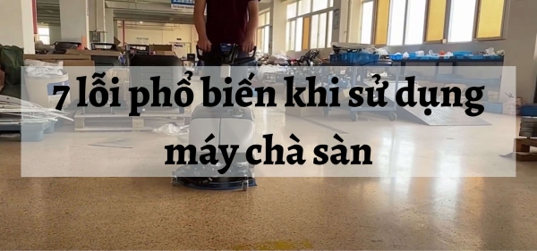
Các lỗi thường gặp ở máy chà sàn và cách xử lý
Máy chà sàn kêu to
Đây là vấn đề thường gặp khi máy chà sàn nhà xưởng đã được sử dụng một thời gian dài mà ít được bảo dưỡng. Cụ thể, trong quá trình vận hành, máy chà sàn có thể gặp các tình trạng máy chà sàn bất ngờ kêu to hoặc gây ra tiếng ồn lớn. Khi máy không được sử dụng trong một thời gian dài, sau khi mang ra sử dụng lại, vấn đề này có thể xảy ra.
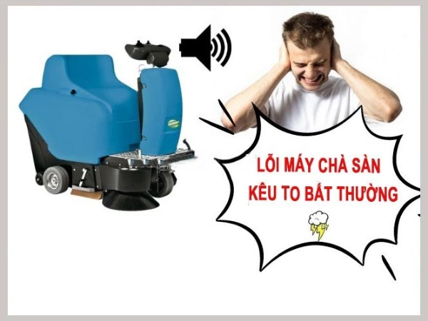
Bộ phận trong máy bị tắc nghẽn hoặc lỏng lẻo
Cách xử lý:
♦ Nhanh chóng tắt máy, ngắt nguồn điện và đợi cho máy nguội trước khi tiến hành kiểm tra.
♦ Kiểm tra kỹ các chi tiết bên trong máy, bao gồm bánh xe, động cơ, bộ phận xả, bộ phận hút và bộ phận điều khiển.
♦ Khi phát hiện rác bị kẹt hoặc tắc nghẽn ở bất kỳ bộ phận nào, hãy tháo gỡ chúng và vệ sinh kỹ lưỡng để đảm bảo máy hoạt động trở lại bình thường.
Lắp đặt thiết bị không đúng cách
Sau một thời gian sử dụng, các chi tiết kết nối có thể trở nên lỏng lẻo do tác động của động cơ, quá trình di chuyển, hoặc va đập. Trong trường hợp này, chỉ cần kiểm tra và vặn chặt lại các chi tiết là có thể khắc phục.
Mô tơ máy chà sàn bị ăn mòn
Nếu bạn sử dụng thiết bị lau sàn chất lượng kém, động cơ có thể bị hỏng nhanh chóng. Hoặc nếu bạn vận hành máy sai cách, làm cho thiết bị hoạt động vượt quá công suất được thiết kế, cũng có thể gây hỏng động cơ.
Trong tình huống này, việc sửa máy chà sàn có thể không khắc phục được sự hỏng hóc của động cơ. Trong trường hợp đó, bạn sẽ cần phải thay đổi mô tơ máy chà sàn mới.
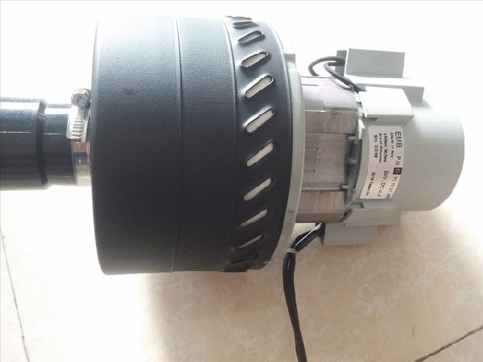
Máy chà sàn không hoạt động
Sửa chữa máy chà sàn khi không hoạt động có thể liên quan đến nguồn điện và cầu chì. Dưới đây là một số vấn đề và cách kiểm tra:
Kiểm tra phích cắm điện
Nếu phích cắm lỏng hoặc không dẫn điện đúng cách, máy chà sàn có thể không hoạt động. Người dùng chỉ cần kiểm tra dây cắm điện, sau đó cắm lại chặt để đảm bảo kết nối đúng.
Ngoài ra, còn một số vấn đề có thể xảy ra với dây cắm điện, như dây điện bị hỏng, đứt do chuột cắn, hoặc ổ cắm điện hỏng. Tất cả những vấn đề này đều có thể gây hại cho máy chà sàn và người dùng, vì vậy luôn luôn kiểm tra cẩn thận trước khi sử dụng.
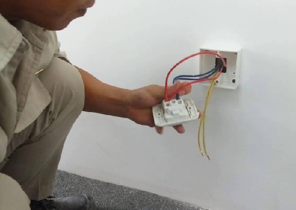
Kiểm tra cầu chì
Khi máy chà sàn hoạt động ở cường độ cao, cầu chì có thể cháy hoặc hỏng. Nếu máy đột nhiên ngắt (mất tín hiệu báo có kết nối điện), hãy kiểm tra và thay cầu chì nếu cần thiết.
Kiểm tra bộ phận cảm nhiệt
Trong các máy chà sàn cao cấp, thường có bộ cảm biến bảo vệ động cơ. Khi động cơ hoạt động quá lâu, chúng có thể quá nhiệt và cảm biến sẽ ngắt để bảo vệ động cơ. Để giải quyết vấn đề này, bạn cần thực hiện như sau:
♦ Đối với máy chà sàn đơn: Đợi khoảng 15 phút để động cơ nguội dần, cảm biến nhiệt sẽ tắt và máy sẽ hoạt động trở lại bình thường.
♦ Đối với máy chà sàn liên hợp: Tiến hành khởi động lại thiết bị bằng nút Reset.
***Tham khảo ngay: Dịch vụ cho thuê máy chà sàn
Hiệu quả làm việc thấp
Sử dụng hóa chất không phù hợp
Lựa chọn hóa chất đúng loại ảnh hưởng đến khả năng làm sạch của máy chà sàn. Nếu bạn sử dụng quá ít hóa chất hoặc dung dịch không đủ đậm đặc, việc loại bỏ vết bẩn cứng đầu sẽ trở nên khó khăn.
Cách khắc phục: Điều chỉnh tỷ lệ hóa chất theo đúng yêu cầu. Ngoài ra, lựa chọn sử dụng các loại hóa chất máy chà sàn chuyên dụng để đạt hiệu suất tẩy sạch tốt nhất.
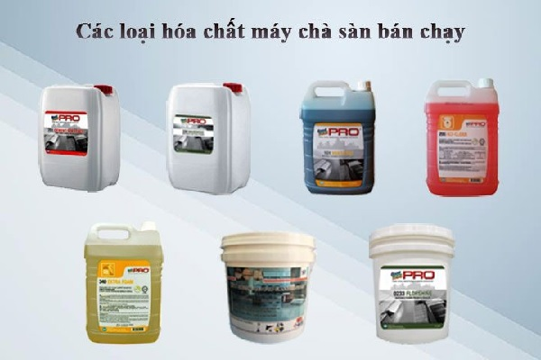
Bàn chải không được vệ sinh thường xuyên
Sau mỗi lần sử dụng, bàn chải có thể bị dính bẩn và mắc kẹt rác, làm giảm khả năng làm sạch. Đừng quên thường xuyên vệ sinh bàn chải để đảm bảo khả năng chà rửa. Hãy chọn loại pad chà sàn phù hợp với chất liệu sàn nhà.
Động cơ bị bẩn
Bụi bặm có thể bám vào phần động cơ và ảnh hưởng đến hiệu suất của thiết bị. Hãy đảm bảo rằng động cơ luôn được vệ sinh sạch sẽ và bảo quản ở nơi khô ráo sau mỗi lần sử dụng.
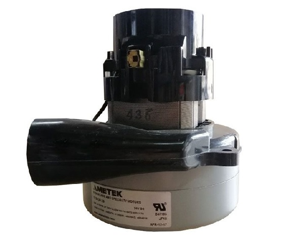
Máy sẽ bị dừng đột ngột khi đang hoạt động
Nếu bạn gặp tình trạng máy đột ngột ngừng hoạt động mà kiểm tra ổ điện, cầu chì, hoặc mô tơ không phát hiện vấn đề gì, thì có khả năng rất cao là máy bị tắc nghẽn, nhưng ở mức độ nghiêm trọng hơn.
Cụ thể, trên bề mặt sàn có thể có nhiều loại rác, lông vật nuôi, sợi vải và các vật liệu khác bám vào bộ phận bàn chải chà sàn, pad đánh sàn, motor, hoặc cần hút nước. Những thứ này có thể gây tắc nghẽn, kẹt bộ phận nào đó và khiến máy đột ngột dừng hoạt động.
Trong trường hợp này, bạn cần kiểm tra và kiểm soát lại các chi tiết nêu trên, sau đó loại bỏ những mảng rác bị kẹt bên trong.
Ngoài ra, một khả năng khác là động cơ của máy chà sàn bị hỏng giữa chừng do sử dụng quá tải hoặc đã qua thời gian sử dụng. Cách duy nhất là thay thế bằng động cơ mới cho thiết bị.
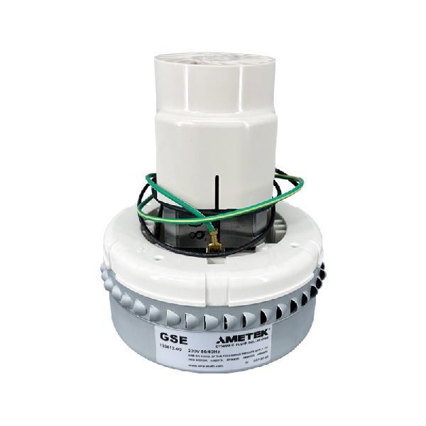
Lỗi tắc nước khi không chảy xuống để chà sàn
Sử dụng các loại hóa chất không đúng cách
Nhiều người thường lơ là khi chọn chất tẩy rửa sàn. Nếu không chú ý và sử dụng các chất có cặn, chúng có thể gây tắc nghẽn và làm cho nước không thể chảy xuống một cách bình thường.
Cách sửa máy chà sàn: Bạn nên luôn sử dụng các dung dịch tẩy rửa sàn chuyên dụng như Multipine, Power Lemon. Tránh sử dụng các chất khó tan hoặc gây tắc nghẽn trong đường ống nước.
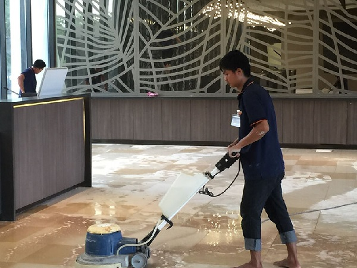
Tắc bộ lọc cơ của máy
Thường thì các máy chà sàn liên hợp sẽ có một bộ lọc nước nằm giữa đường dẫn nước từ bình chứa xuống bàn chải. Bộ lọc này sẽ ngăn chặn các chất cặn bẩn và tích tụ dần, gây tắc nghẽn trong đường nước.
Cách sửa máy chà sàn: Đều đặn mỗi 2 – 3 tháng, bạn nên tháo bộ lọc và rửa sạch nó. Điều này sẽ giúp hạn chế sự cố và tránh việc phải sửa máy chà sàn nhiều lần.
Không bảo trì bảo dưỡng đúng cách
Đường ống dẫn nước từ bình chứa xuống bàn chải thường có nhiều đoạn gấp khúc. Trong quá trình sử dụng, các cặn bẩn và rỉ sắt có thể tích tụ ở những đoạn này và gây tắc nghẽn.
Cách sửa máy chà sàn: Định kỳ tháo ống dẫn để rửa sạch các cặn bẩn và rỉ sắt, giúp đường ống luôn thông thoáng.
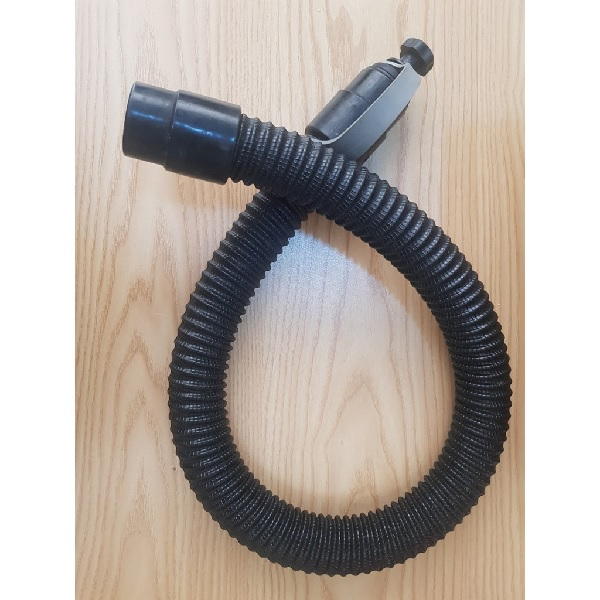
Lỗi không hút được nước lên được thùng chứa nước thải
Đường ống từ bàn hút lên thùng nước bị hở hoặc tắc
Đây là một sự cố thường gặp trên máy chà sàn liên hợp. Trên các thiết bị này, có một đường ống dẫn nước bẩn từ bộ phận hút lên thùng chứa nước bẩn của máy. Khi đường ống này bị tắc hoặc bị thủng hoặc hở, thì lực hút sẽ bị suy yếu.
Cách sửa máy chà sàn: Để khắc phục, bạn cần tháo ống nước để loại bỏ tóc, rác bị kẹt bên trong. Nếu đường ống bị hỏng, bạn có thể dùng keo để bịt lại hoặc thay mới ống dẫn nước bẩn của máy chà sàn.
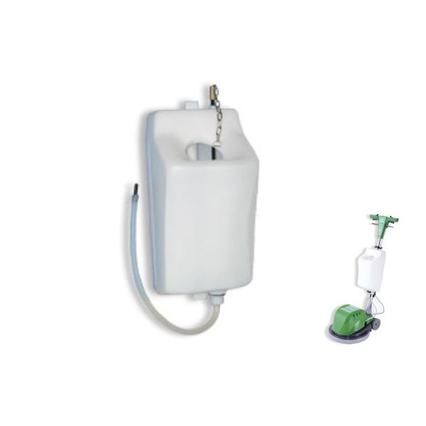
Nắp bình chứa nước thải không đậy kín
Động cơ hút nước trên máy chà sàn tương tự như một máy hút bụi công nghiệp. Toàn bộ hệ thống phải được đậy kín để tạo áp lực hút xuống, từ đó nước mới có thể được hút lên. Nếu nắp bình chứa nước thải bị hở hoặc bung vỡ, nó sẽ không thể hút nước.
Cách sửa máy chà sàn: Bạn nên kiểm tra phần nắp đậy cũng như chỗ viền cao su để đảm bảo nắp đậy kín và miếng cao su không bị mòn hoặc gãy.
Cảm biến bình chứa nước bẩn bị lệch hoặc hỏng
Bộ phận cảm biến có nhiệm vụ theo dõi và báo cáo tình trạng của bình chứa nước bẩn, nếu đầy hoặc cạn. Khi thùng đầy, cảm biến sẽ ngừng nước không cho nước lên nữa để bảo vệ máy. Đơn giản, bạn chỉ cần đổ bình chứa và tiếp tục làm việc.
Cách sửa máy chà sàn: Trong trường hợp bạn sử dụng cảm biến cơ và người dùng vô tình lắp nó ngược (bình cạn cũng báo đầy bình nước), máy cũng sẽ không hoạt động. Nếu bạn không có kinh nghiệm sửa máy chà sàn, bạn nên liên hệ với dịch vụ kỹ thuật để được hỗ trợ.
Máy chạy nhanh hết điện (đối với loại máy chà sàn dùng bình)
Sạc ắc quy không đúng với quy trình
Quá trình sạc và cách sạc ảnh hưởng lớn đến tuổi thọ của acquy máy chà sàn. Mỗi loại pin yêu cầu một chế độ sạc riêng biệt. Nếu bạn không tuân thủ quy trình sạc phù hợp, pin sẽ bị chai mòn nhanh chóng. Hãy luôn sạc đầy pin mỗi lần trước khi sử dụng và tận dụng hết lượng pin trước khi tiến hành sạc lần tiếp theo.
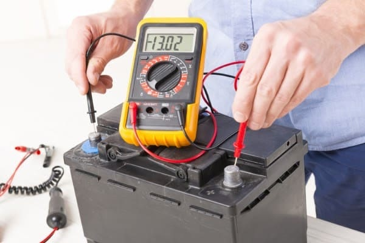
Không thực hiện bảo trì ắc quy thường xuyên
Khi sử dụng máy chà sàn chạy bằng pin, quản lý nước trong bình để cấp nước cho acquy rất quan trọng để tránh tình trạng khô cực. Hãy sử dụng nước lọc (nước uống hàng ngày) thay vì nước axit loãng được bán rộng rãi trên thị trường, vì nước axit có thể làm hỏng acquy.
Cách bảo dưỡng máy chà sàn đúng cách để kéo dài tuổi thọ
- Thường xuyên kiểm tra thiết bị: Trước khi sử dụng, quý khách cần đảm bảo máy đã được tắt nguồn và kiểm tra kỹ lưỡng để đảm bảo không có dấu hiệu rò rỉ nước hoặc chất làm sạch.
- Làm sạch bộ lọc thường xuyên: Đảm bảo máy hoạt động hiệu quả bằng cách thường xuyên làm sạch bộ lọc để tránh tắc nghẽn.
- Kiểm tra và thay đổi bàn chải và pad khi cần thiết: Chọn kích thước bàn chải phù hợp và làm sạch pad sau mỗi công việc để tránh bụi và chất bẩn.
- Sử dụng chất làm sạch đúng cách: Sử dụng chất làm sạch phù hợp để bảo vệ máy và đảm bảo kết quả làm sạch tốt nhất.
- Bảo quản máy đúng cách: Lưu trữ máy ở nơi khô ráo để ngăn chặn sự hình thành của nấm mốc và vi khuẩn.
- Bảo trì hệ thống điện và động cơ: Kiểm tra và bảo dưỡng định kỳ để đảm bảo hệ thống hoạt động ổn định.
Một số câu hỏi thường gặp khi sửa chửa máy chà sàn
Nên sử dụng hóa chất gì cho máy chà sàn?
Một số loại hóa chất thông dụng cho máy chà sàn:
- Chất tẩy rửa đa năng: thích hợp cho lau sàn hàng ngày, đánh bóng nhẹ.
- Chất tẩy rửa chuyên dụng: dùng để đánh bay các vết bẩn cứng đầu, dầu mỡ, v.v..
- Chất bảo dưỡng sàn: giúp duy trì độ bóng đẹp và tuổi thọ của sàn.
Cách để bảo quản máy chà sàn sau khi sử dụng?
Để đảm bảo tuổi thọ và hiệu quả hoạt động của máy chà sàn, bạn cần thực hiện các bước bảo quản sau mỗi lần sử dụng:
Vệ sinh máy:
- Rút phích cắm điện: thực hiện trước khi vệ sinh.
- Tháo rời các bộ phận như bàn chải, pad đánh sàn, thùng chứa nước bẩn.
- Rửa sạch lại các bộ phận bằng nước và xà phòng.
- Làm khô hoàn toàn các bộ phận trước khi thực hiện lắp ráp lại.
- Vệ sinh thân máy bằng khăn ẩm.
Kiểm tra máy:
- Kiểm tra các bộ phận như dây điện, ổ cắm, công tắc, motor để đảm bảo không bị hư hỏng.
- Kiểm tra bàn chải và pad đánh sàn xem có bị mòn hay hư hỏng hay không.
- Thay thế các bộ phận khi cần thiết.
Bảo quản máy:
- Bảo quản máy ở nơi khô ráo và thoáng mát.
- Tránh để máy tiếp xúc trực tiếp với ánh nắng mặt trời hay nhiệt độ cao.
- Đậy nắp thùng chứa để tránh bụi bẩn bám vào.
- Thực hiện bôi trơn các bộ phận chuyển động định kỳ.
Lưu ý gì khi sử dụng máy chà sàn?
Để đảm bảo an toàn và hiệu quả khi sử dụng máy chà sàn, bạn cần lưu ý những điểm sau:
Trước khi sử dụng máy chà sàn:
- Đọc kỹ các hướng dẫn sử dụng của nhà sản xuất.
- Kiểm tra máy xem có hư hỏng gì hay không.
- Cắm điện vào ổ cắm phù hợp.
- Mang đồ bảo hộ như găng tay, khẩu trang và kính bảo hộ.
Khi sử dụng máy chà sàn:
- Đẩy máy với tốc độ vừa phải, không nên đi quá nhanh.
- Chú ý đến những chướng ngại vật trên sàn nhà.
- Tránh để máy va đập vào tường hoặc các vật dụng khác.
- Không sử dụng máy trên sàn nhà ướt.
- Cẩn thận khi sử dụng máy trên cầu thang.
Sau khi sử dụng:
- Rút phích cắm điện.
- Vệ sinh máy sạch sẽ.
- Bảo quản máy ở nơi khô ráo, thoáng mát.
Lời kết
Sửa máy chà sàn đòi hỏi phải có kỹ thuật và kiến thức cơ bản về thiết bị. Nếu bạn không tự tin trong việc sửa chữa, hãy luôn luôn tìm đến nhà sản xuất hoặc dịch vụ sửa chữa chuyên nghiệp để đảm bảo an toàn và hiệu quả trong việc bảo quản và sửa máy chà sàn của bạn.
***Tìm hiểu thêm: Máy hút bụi công suất lớn giá tốt
 Cho thuê máy chà sàn công nghiệp tại Hà Nội – 02422009188
Cho thuê máy chà sàn công nghiệp tại Hà Nội – 02422009188 Tư vấn cách chọn lựa máy chà sàn nhà gia đình
Tư vấn cách chọn lựa máy chà sàn nhà gia đình Có nên mua máy hút bụi công nghiệp cho gia đình?
Có nên mua máy hút bụi công nghiệp cho gia đình?